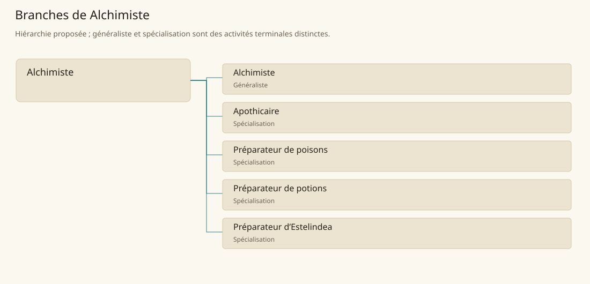

Alchimiste
Préparer des substances à partir de matières identifiées et de procédures documentées, sans supposer un effet magique automatique.
Métier de base proposé. Cette famille rassemble les disciplines communes de ses branches ; elle n’ajoute pas une profession à chaque personne. Un généraliste est une feuille précise, distincte de la somme statistique de la base.
Fonctions
- Identifier, peser et préparer les composants d’un lot
- Conduire les opérations autorisées et surveiller leur résultat
- Conditionner le produit et consigner composition, provenance et limites
Compétences nécessaires proposées
| Savoir-faire proposé | À quoi il sert | Acquisition |
|---|---|---|
| Identification des composants | Identifier, peser et préparer les composants d’un lot | Parcours proposé : Comparer des composants avec une collection validée |
| Conduite d’opérations | Conduire les opérations autorisées et surveiller leur résultat | Parcours proposé : Répéter une préparation inerte approuvée par le maître |
| Traçabilité de préparation | Conditionner le produit et consigner composition, provenance et limites | Parcours proposé : Tenir un registre sur plusieurs lots semblables |
| Organisation de laboratoire | Organiser matières autorisées, matériel réservé et contrôles de laboratoire. | Parcours proposé : Planifier stockage séparé et disponibilité du matériel |
Parcours proposé : Apprentissage encadré sur substances inertes avant une filière de remède, poison ou potion ; aucune recette toxique n’est donnée ici.
Outils et chaînes de travail
Balances, Mortier, Récipients de verre, Registre de laboratoire.
- Collecte et commerces de composants
- Atelier et contrôles
- Commanditaires et habilitations
Arbre de cette famille


| Branche | Nature | Fonction distinctive |
|---|---|---|
| Alchimiste | Généraliste | La base réunit plusieurs filières ; ce généraliste n’est pas automatiquement apothicaire, empoisonneur ou préparateur de potions magiques. |
| Apothicaire | Spécialisation | Préparer un produit ne confère pas l’ensemble des actes du guérisseur ou médecin. |
| Préparateur de poisons | Spécialisation | Les poisons de créatures de Tsvetan soutiennent la filière ; ils ne rendent pas tous les alchimistes fabricants de poisons. |
| Préparateur de potions | Spécialisation | L’activité à Mage Tower est sourcée ; aucune recette, emplacement de sort ni effet inédit n’est ajouté. |
| Préparateur d’Estelindea | Spécialisation | Le produit et son contexte sont attestés ; les gestes détaillés sont proposés et n’étendent pas ses effets. |
Implantation et parts de population
Les deux colonnes changent de dénominateur. Les effectifs régionaux proposés servent à dimensionner les filières ; ils ne prouvent pas une compétence individuelle. Les valeurs relatives ne donnent aucun effectif absolu.
| Région | % des habitants | % des actifs | Portée |
|---|---|---|---|
| Empire central | 0,259 % | 0,401 % | proportion proposée |
| République des Freelands | 0,438 % | 0,684 % | proportion proposée |
| Ben’net impérial | 0,246 % | 0,366 % | proportion proposée |
| Royaume de Kolbjörn | 0,278 % | 0,417 % | proportion proposée |
| Magocratie de Mage Tower | 0,609 % | 0,920 % | proportion proposée |
| Seashores | 0,291 % | 0,440 % | proportion proposée |
| Forêt de Sindile | 0,323 % | 0,481 % | proportion proposée |
| Domaines stravians | 0,290 % | 0,439 % | proportion proposée |
| Îles des Tempêtes | 1,678 % | 2,331 % | proportion proposée |
| Cités de Taii’Maku | 0,197 % | 0,451 % | proportion proposée |
| Théocratie de Kepesh | 0,485 % | 0,724 % | proportion proposée |
| Tsvetan | 0,140 % | 0,210 % | proportion proposée |
| Yama | 0,610 % | 0,915 % | proportion proposée |
| Undertanares | 0,304 % | 0,475 % | scénario relatif |
| Darkall | 0,065 % | 0,099 % | scénario relatif |
| Mystical et Wasteland | non applicable | non applicable | absence de dénominateur civil |
Choix et sources
Références du registre de base : MJ128, BR55, SB193, SB138, SB153. Leur portée concerne les activités, ressources et contextes des feuilles rattachées ; le regroupement en base, les fonctions détaillées, outils, compétences et formations sont proposés P, sans bonus ni nouvelle statistique.
La parenté entre branches et les savoir-faire de cette fiche sont des propositions de conception. Appui des activités : Basic Rules p. 55, Manuel des Joueurs p. 128, Tanares Sourcebook p. 138, Tanares Sourcebook p. 153, Tanares Sourcebook p. 193.